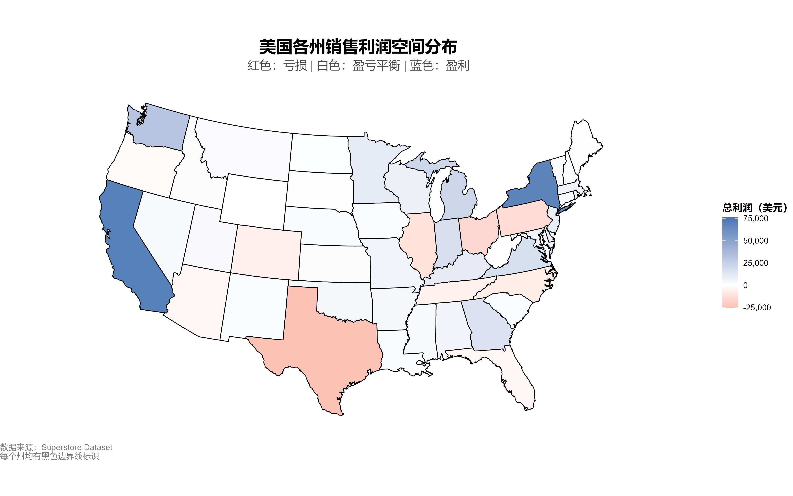
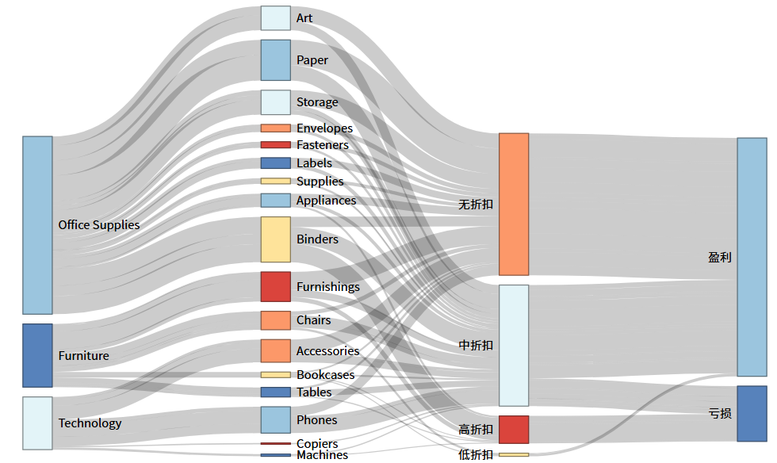
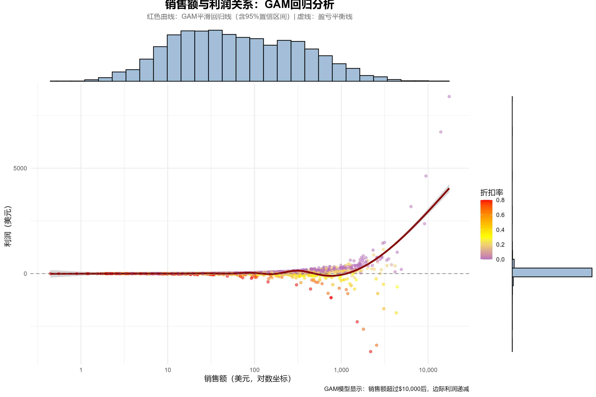
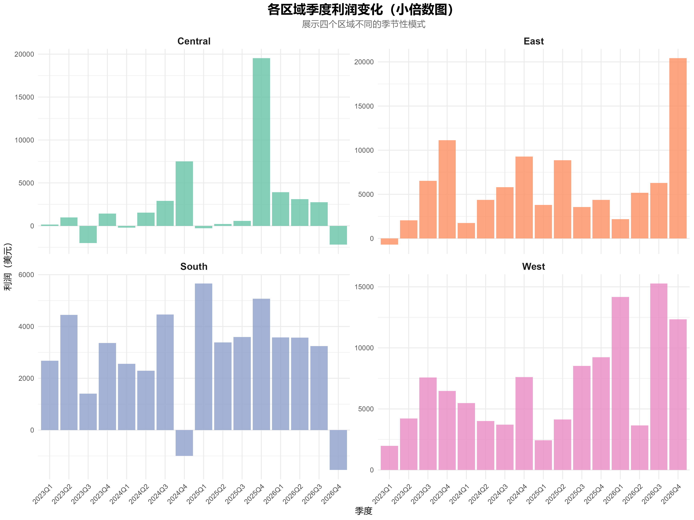
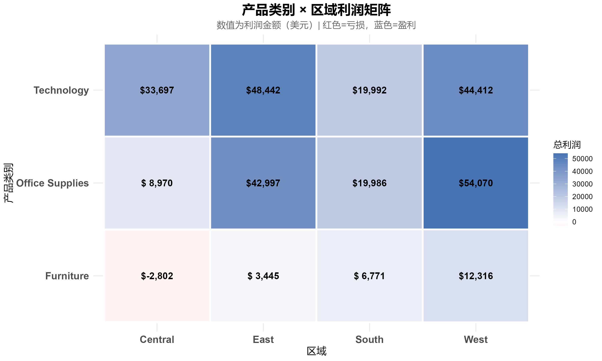
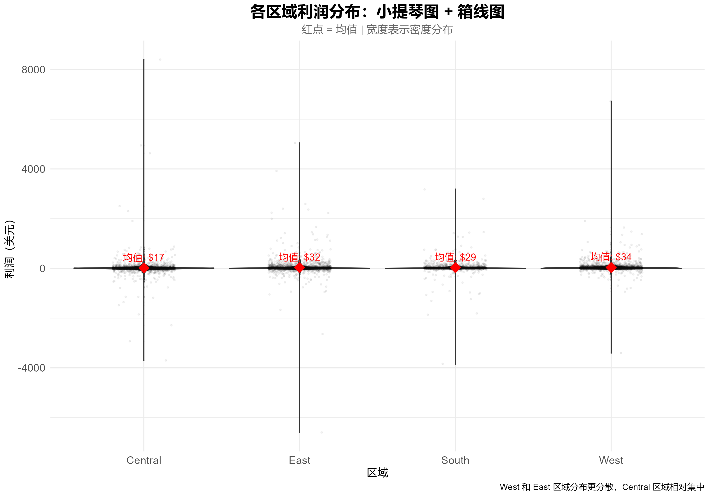
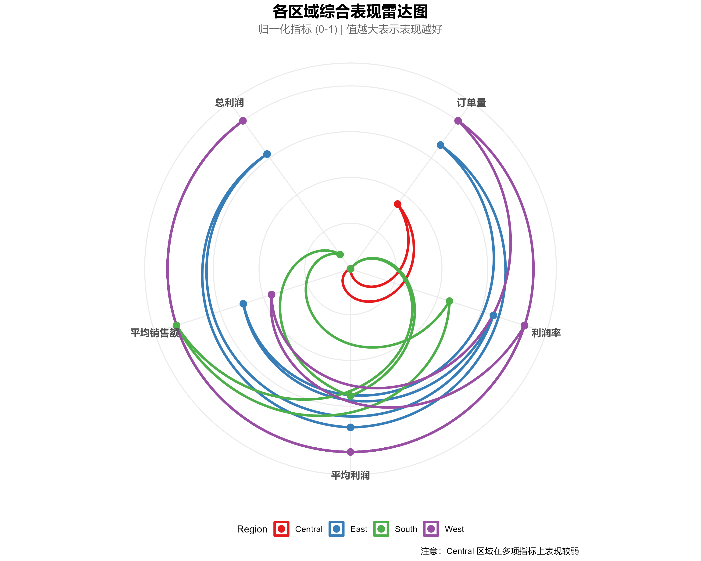

基于 sf / maps 包绘制美国州级分级统计图，支持等频分位数、自然断点法分组，发散色阶（红-白-蓝）自动映射利润/销售额，可叠加州名标签和Albers投影。
networkD3构建多层级流向图，支持自定义节点（大类→子类→折扣档位→盈亏状态），自动聚合频次并生成HTML交互小部件，鼠标悬停查看流量值。
mgcv::gam 拟合广义加性模型，绘制平滑回归曲线及置信带；ggExtra::ggMarginal 添加边际直方图/箱线图，支持对数坐标轴转换，颜色编码第三维度（如折扣率）。
geom_tile 构建二维聚合矩阵（产品类别×区域/州），fill映射利润/销售额，自动添加文本数值标签；发散色阶强调正负差异，支持自定义中点。
facet_wrap / facet_grid 分面绘制多子图，统一坐标轴便于横向对比（如各区域季度利润变化），支持自定义时间聚合（季度/月度）和条形/折线图。
coord_polar 生成多维度归一化雷达图（平均利润/总利润/利润率/订单量等）；geom_violin + geom_boxplot 展示分布形态，支持均值点标注与抖动点叠加。
plotly::plot_ly 绘制三维散点图，X/Y/Z轴映射经度/纬度/利润，点大小与颜色编码额外指标，生成可拖拽、缩放的HTML交互地图。
dplyr 链式操作：group_by + summarise 完成州级、区域级、产品类别或时间粒度的利润/销售额/折扣率聚合；支持自定义盈亏标识、折扣分层等特征工程。

ggplot2 + 州边界，分位数分组（红-白-蓝发散色阶），直观展示东西海岸高盈利、中西部亏损空间格局。
Choropleth · 空间异质性
networkD3 交互式桑基图，展示产品大类→子类→折扣水平→盈亏结果，高折扣路径导向亏损。
层级流向 · 折扣归因
销售额 vs 利润，GAM平滑曲线揭示边际利润递减规律，颜色映射折扣率（红=高折扣）。
非线性拟合 · 折扣侵蚀
ggExtra 添加的边际直方图，展示销售额与利润的分布密度，辅助理解数据集中趋势。
边际分布 · 密度补充
产品类别 × 区域利润矩阵，格内标注具体金额，蓝色盈利红色亏损，快速识别高/低效组合。
二维聚合 · 数值标注
展示各区域利润分布形态、中位数、均值（红点）及异常值，West/East波动大，Central集中且偏低。
分布对比 · 离群检测
归一化指标（总利润/平均利润/利润率/平均销售额/订单量），West多边形最大，Central全面垫底。
多维对比 · 策略优先级本技能专为嵌套结构数据设计，轻松实现：
📊 美国市场数据分析师 – 需要分析美国各州/区域利润表现、折扣策略效果、地理销售异质性。
📚 应用统计/数据科学专业学生 – 完成课程期末报告（如《数据可视化技术》），需生成多种高级图表并编写R代码。
📈 商业智能分析师 – 基于美国销售数据（如Superstore）进行多层次诊断，为区域运营、产品优化提供可视化佐证。
🎓 科研人员 – 研究空间经济、区域不平等或零售利润驱动因素，需要可复现的可视化流水线。
🛠️ R语言开发者 – 希望复用现成的图形模板（地图/桑基图/雷达图）并快速适配自己的数据集。
# 载入核心包
library(tidyverse)
# 数据聚合：产品类别 × 区域 利润求和
heatmap_data <- superstore %>%
group_by(Category, Region) %>%
summarise(Total_Profit = sum(Profit, na.rm = TRUE), .groups = "drop")
# 绘制热力图 + 数值标签
ggplot(heatmap_data, aes(x = Region, y = Category, fill = Total_Profit)) +
geom_tile(color = "white", size = 1.2) +
geom_text(aes(label = scales::dollar(Total_Profit)), size = 4, fontface = "bold") +
scale_fill_gradient2(low = "#D73027", mid = "white", high = "#4575B4",
midpoint = 0, name = "总利润") +
labs(title = "产品类别 × 区域利润矩阵", x = "区域", y = "产品大类") +
theme_minimal()